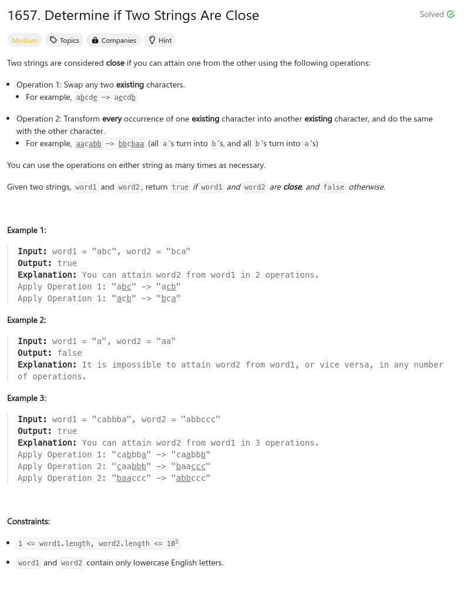

參考資訊：
https://www.cnblogs.com/cnoodle/p/14325580.html
題目：

int mysort(const void *a, const void *b)
{
return (*(int *)a) - (*(int *)b);
}
bool closeStrings(char* word1, char* word2)
{
int i = 0;
int w1len = strlen(word1);
int w2len = strlen(word2);
int w1cnt[26] = { 0 };
int w2cnt[26] = { 0 };
for (i = 0; i < w1len; i++) {
w1cnt[word1[i] -'a'] += 1;
}
for (i = 0; i < w2len; i++) {
w2cnt[word2[i] - 'a'] += 1;
}
for (i = 0; i < 26; i++) {
if ((w1cnt[i] > 0) && (w2cnt[i] == 0)) {
return false;
}
if ((w2cnt[i] > 0) && (w1cnt[i] == 0)) {
return false;
}
}
qsort(w1cnt, 26, sizeof(int), mysort);
qsort(w2cnt, 26, sizeof(int), mysort);
for (i = 0; i < 26; i++) {
if (w1cnt[i] != w2cnt[i]) {
return false;
}
}
return true;
}